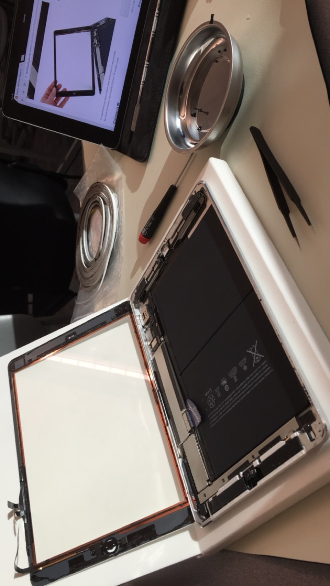

Clubs
R-Cade Club
R-Cade Club meets every Thursday to play video games with one another to relax and unwind after a long week of hard studying. During my Sophomore year, I was third-in-command, helping coordinate events, take roll, and otherwise help out in any way I could. I also designed R-Cade Club's very first logo!

iPad Repair Club
Although the iPad Repair Club disbanded after my Freshman year, I learned a lot about how to fix Apple devices. It was very interesting seeing how much hardware is packing into such a small device. They really don't waste any space!
Knights of Riordan
As a Knight of Riordan, I show prospective students around the school, making them feel welcomed and have them experience what it really feels like to be a Crusader.
National Honors Society
The National Honors Society is an invitation-only club that recognizes students who demonstrate excellence. Being part of this national group, members receive special recognition at their graduation ceremony for being part of NHS. To continue being a member annually, one must accumulate at least 30 hours of tutoring other students.
Internships
Berkeley Engineering and Research
Hanson's Robotics